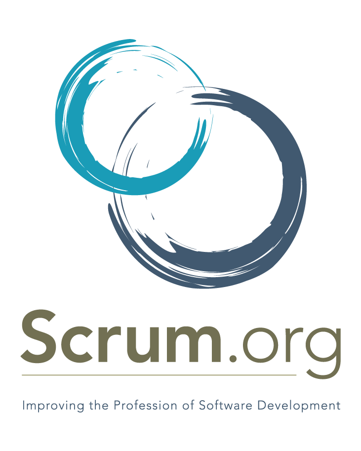

CERTIFICATION
- Professional Scrum Master
- Microsoft Certified: Data Analyst Associate
- Microsoft Technology Assoiate (MTA): Database Fundamental
- Microsoft Technology Associate (MTA): Introduction to Programming Using Python
- Microsoft Certified: Azure Fundamental